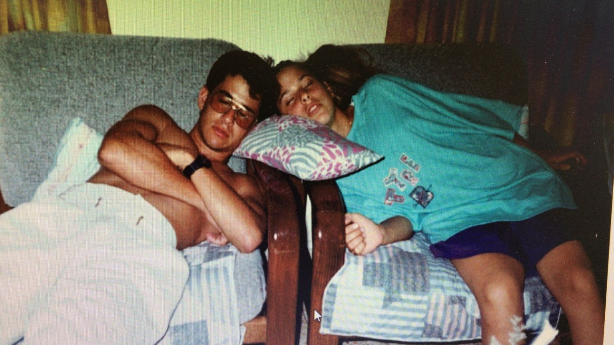

נולדת ב־77, אבל את עדיין אותה ילדה מתוקה עם חיוך ממיס! הזמן עובר, ואיתו רק מתעצמים האהבה, הזיכרונות והחיבור בינינו. מאחל לך בריאות, שמחה, רגעים יפים – וים של אהבה. תישארי בדיוק כמו שאת – מיוחדת, מצחיקה ואחת ויחידה.
